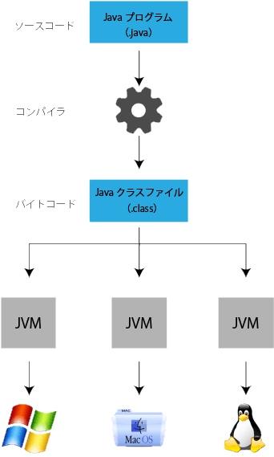

第0章 Javaとは
Java は「プログラミング言語」であり、また、「プログラム実行のプラットフォーム」でもあります。
homepage
# **JAVAとは** <hr> <br> <h1><b>1.JAVAの紹介</b></h1> <p> <h2><b>Javaとはプログラミング言語</b></h2> Javaは、1995年にSun Micro Systems社によりリリースされたプログラミング言語です。<br>Javaは、高いセキュリティを確保できたり、動作が安定しているため信頼性があります。 また、JavaはOS (※1) に依存しないためあらゆる環境でソフトを動かすことができるため、web開発からゲーム開発まで幅広いジャンルの開発で利用されています。<br>具体的には、金融機関の取引システムや運送会社の配送システム、AndroidアプリやSNSなど身近なところで利用されています。<br>有名なものを上げるとゲームのMinecraftやTwitterもJavaによって作成されています。 </p><br> <h2><b>Javaを使うメリット</b></h2> <ul> <li>処理速度が速い<br> Javaは、起動にコンパイル(※2)を必要とするコンパイラ言語であるため、RubyやPHP、 Pythonといった言語よりも処理速度が速い。<br> (※2) 書いたプログラムを機械が分かるように翻訳する作業のこと。<br><br></li> <li>プラットフォームに依存しない<br> Javaの実行にはJVM(Java Virtual Machine)を使用するため、システムに依存しません。 またOSやハードウェアにも依存せず実行することができます。<br><br></li> <li>オブジェクト指向である<br> オブジェクト指向とは、プログラミングをモノにたとえて組み立てることにより、仕組みを成り立たせる考え方のことです。<br> 1つのプログラミングの元になるプログラムを作っておくことで、他のプログラムにも汎用でき、作業を効率化していく考え方です。<br> この考え方によりプログラムを細かく切り分けて管理することができるため、複数人で同じものを開発することが可能となります。</li> </ul> <br><br> <p> Javaは、OSに依存せずあらゆる環境でソフトを動かすことができるとお伝えしました。<br> JavaがOSや環境に依存せず利用できるのは、Javaの利用にあたってJavaの利用環境(JVM)や開発環境(JDK)を事前にインストールいているためです。<br><br> Javaを利用するにあたっては、プログラムを動かすためのJVM、プログラムを実行するためのJRE、プログラムを開発・実行するためのJDKがあります。<br> 以下でそれぞれ解説します。 </p> <br><br> <p> <h2><b>JVMとは</b></h2> JVMとは、Java Virtual Machineの略でJavaで作成されたプログラムを動かすために必要となるソフトウェアです。JVMは「Java仮想マシン」とも呼ばれています。<br> 以下の図で表したように、JVMが［Javaプログラム］と［利用しているOS］との間に入りやりとりするので、Javaのプログラムは環境に依存せず動かすことができます。 </p><br>  <p>Javaで作ったプログラムはOSではなく、JVMとやりとりするので、OSごとに特別な設定などは不要です。JVMがあれば、OSがWindows、Mac、Linuxなど、環境に依存せずに動かせることがわかりますね！</p> <br><br> <P> <h2><b>JREとは</b></h2> JREとは、Java Runtime Environmentの略でJavaのプログラムを実行する時に必要なものがまとめられたものです。 Java実行環境とも呼ばれています。<br> JREには、JVMや対応するAPI(※3)がセットになっています。<br> Javaで作成されたアプリケーションはJVM上で実行されますが、実際にはJREを各OSにインストールすることで Java アプリケーションが実行できる環境が構築できます。 <br><br> なお、以前はJRE だけを単独でインストールすることが可能でしたが、 現在では JRE は単独で配布されておらず、このあと解説する JDK をインストールする必要があります。<br> (※3) Application Programming Interfaceの略で、 外部のソフトウェアが持つ機能を共有できる仕組みのこと。この場合はJavaの機能を利用するために呼び出す仕組みと考えてください。<br> </P> <br><br> <P> <h2><b>JDKとは</b></h2> JDK とは Java Development Kit の略で Java <br>のプログラムの開発や実行を行うために必要なものがまとめられたものです。Java開発環境とも呼ばれています。 JREの他に、 コンパイラ(※4)や、デバッカー(※5)などが含まれ、 JDKをインストールすることで、Javaを使ったアプリケーションの作成や、作成したアプリケーションの実行まで一通り行うことができます。<br> <br> (※4)Javaで書かれたプログラムを機械が分かるように翻訳する作業 (コンパイル)を行うためのプログラム。<br> (※5)デバック(プログラムや関数の間違いを見つけ、排除する作業)を行うためのプログラム。<br> </P> <img style="height: 220px"; src="../assets/img/j00/intro02.png" alt=" ">
content
戻る